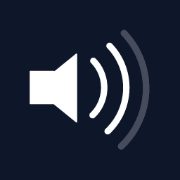
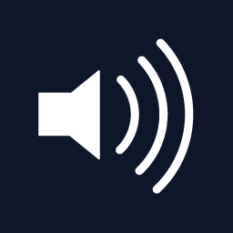

The two primary sections of sleep are the base sounds and the accent sounds. Secondary sections are seen towards the top of Sleep. The volume slider is at the top. The sleep timer is at the far left. The center is a current time display and the app information is to the far right.
Base Sounds
Scroll through the set of base sounds at the bottom of Sleep.
Once you see one you like, tap it to start listening to the soothing base sound.
Accent Sounds
Accent sounds complement the base sounds. You can only play accent sounds once a base sound is playing.
You can have up to 5 accent sounds selected to use, a minimum of 2 are required to be selected.
Changing the accent sounds is easy, just select the + accent tile called more and you will be presented with the full list of accent sounds.
Unselect the accents you no longer want to use and select the new ones you would like to use and hit set.
Accent sounds have 4 levels of volume operation:
Off
Low
Medium

High

Tapping an accent that is off will turn it on and set the volume level to low, tapping once more will set the accent volume to medium and lastly tapping once more will raise the volume to high. Tapping the accent after it is set to high will turn it off.
Sleep Timer
The sleep timer can be accessed by tapping the top left moon icon next to the time. This will bring up a list of minutes that you can select and set to turn off all sounds after that time has elapsed.
You can re select different times after you have already selected the sleep time if you change your mind. Selecting infinity will essentially turn off the sleep timer.
Sleep to Last
The first base sound you will see on the far left is Sleep to Last. Selecting this base sound will play whatever you setup the last time you used sleep. The accents, volume, base sound and sleep timer will all automatically start from where you last had them.
Your last used settings get saved after 5 min. So once you have setup sleep the way you want it, keep it running for atleast 5 minutes and then those settings will get automatically saved. Then you can open Sleep and simply select the Sleep to last base sound and be all ready for a good nights sleep.
Dynamic Rain
This is the first Dynamic base sound for sleep. Dynamic Rain is designed to mimic a real rain storm. The sounds of rain will change as they do in a real storm. Sometimes the rain will get real quiet, other times it will come down hard. Each time you use Dynamic Rain, you will experience an entirely new rain storm for a better nights sleep.